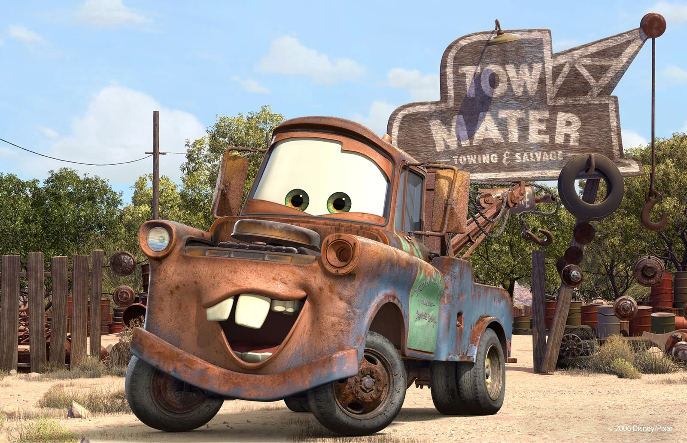
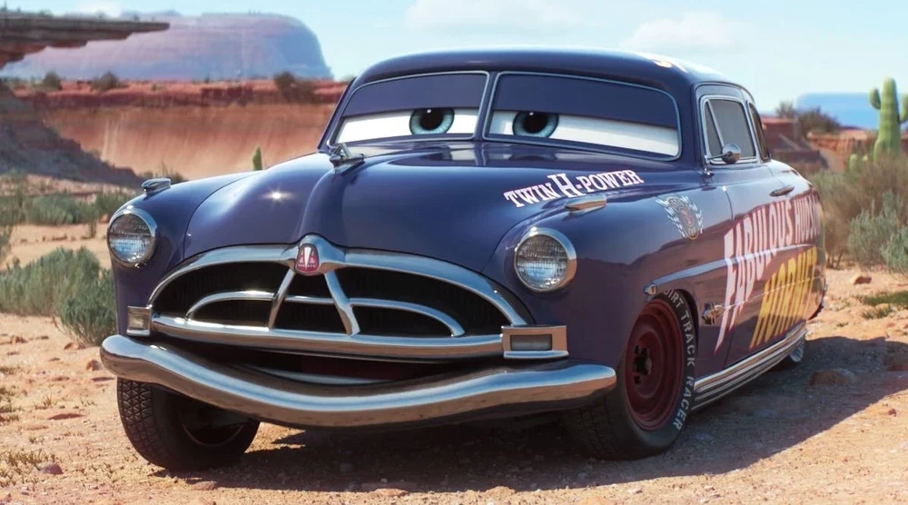
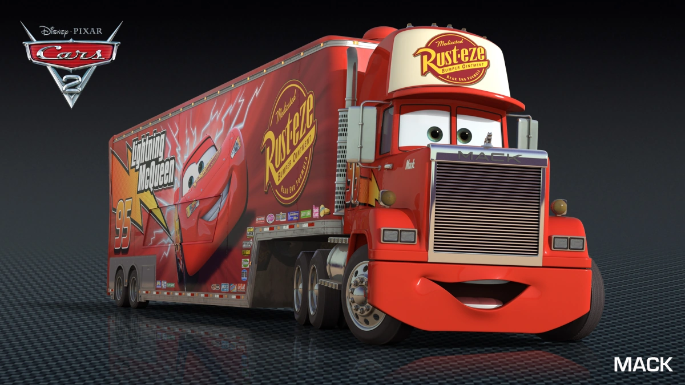
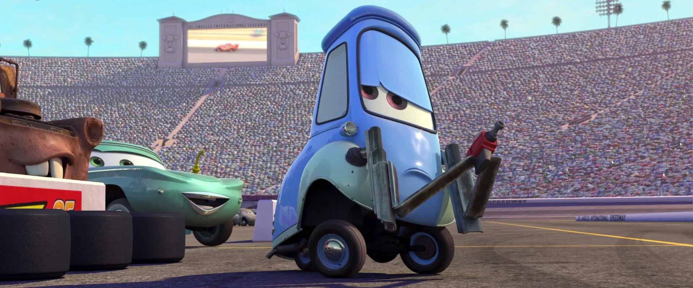
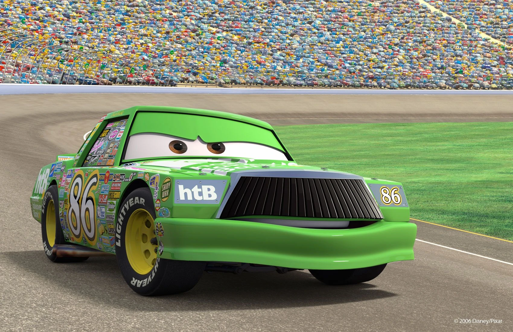

Rayo McQueen
El protagonista
Un joven novato coche de carreras con un enorme talento y una ambición que le llevará a descubrir el verdadero significado de la humildad.
Conoce a los personajes principales de esta bella película y descubre el rol que representa cada uno.
El protagonista
Un joven novato coche de carreras con un enorme talento y una ambición que le llevará a descubrir el verdadero significado de la humildad.

El mejor amigo
Una grúa de gran corazón, divertida y algo despistada. Su amistad con Rayo McQueen le enseñará que lo importante no siempre es ganar, sino disfrutar del camino.

Interés amoroso de McQueen
Un coche femenino moderno, independiente, inteligente y con gran sentido del humor que será el interés amoroso de McQueen y la primera en darle una segunda oportunidad de entre todos los demás pueblerinos.

Mentor del Rayo McQueen
Mostrado como un anciano gruñón que disfruta la paz y tranquilidad de su pueblo, que intentaba olvidar su pasado de corredor famoso, pero después conocer a Rayo y convertirse en su jefe de mecánicos, pasó de ser un antiguo campeón de la Copa Pistón y acaba convirtiéndose en mentor de McQueen.

Camión semirremolque de McQueen
El fiel camión semirremolque que transporta a Rayo McQueen a todas sus carreras, es amigable, bonachón, actúa como una figura de apoyo o "voz de la razón" y fue el que le recomendó a McQueen correr para el equipo Rusteze, siendo el primero de todos que realmente quiso darle una oportunidad y que siempre está para él.

Montacargas del pueblo y miembro principal del equipo de boxes
Es un pit pequeño, azul, optimista y divertido, y el mejor amigo y socio comercial de Luigi. Su gran velocidad le permite desempeñarse bien como miembro del equipo de boxes, y trabaja en el equipo de carreras de McQueen para proporcionarle a Rayo neumáticos nuevos cada vez que los necesita y de la forma más eficiente posible.

Rival del Rayo McQueen
El antagonista principal de la película y uno de los rivales finales de McQueen. Un engreído y egocéntrico corredor que demostraba su agresividad en las carreras donde interfería o dañaba a los otros corredores con tal de ganar la carrera y conseguir finalmente la copa Pistón para salir de la sombra del Rey.

El rival máximo a vencer
El veterano de la competición, con el récord de llevar 7 copas Pistón ganadas seguidas y compitiendo por más de 20 años, manteniendo en cada carrera el primer lugar casi toda la carrera. Él será el personaje que recibirá la ayuda de McQueen para poder acabar de forma digna su legado en el mundo de las carreras.